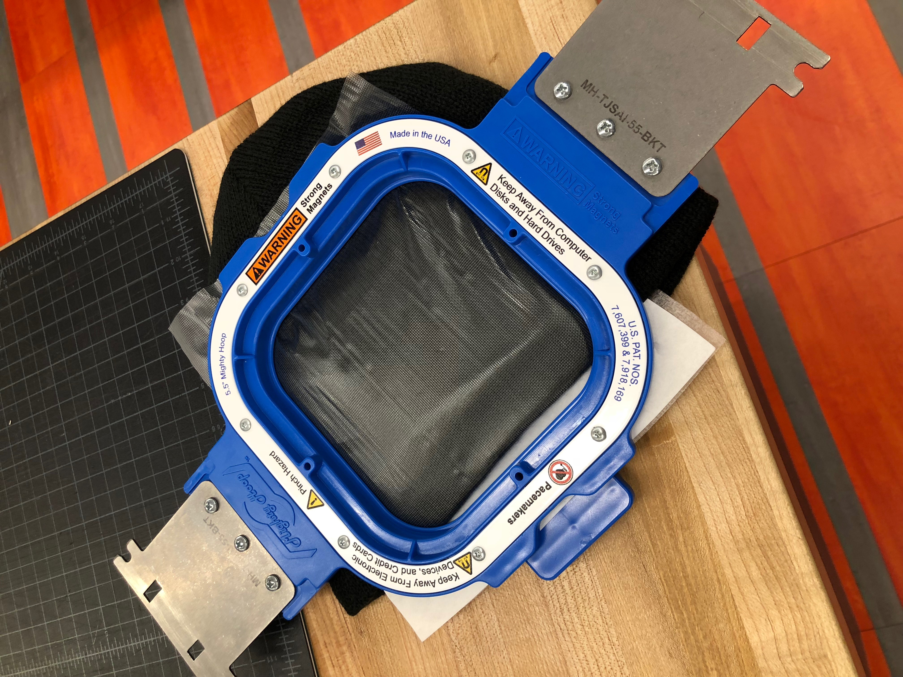
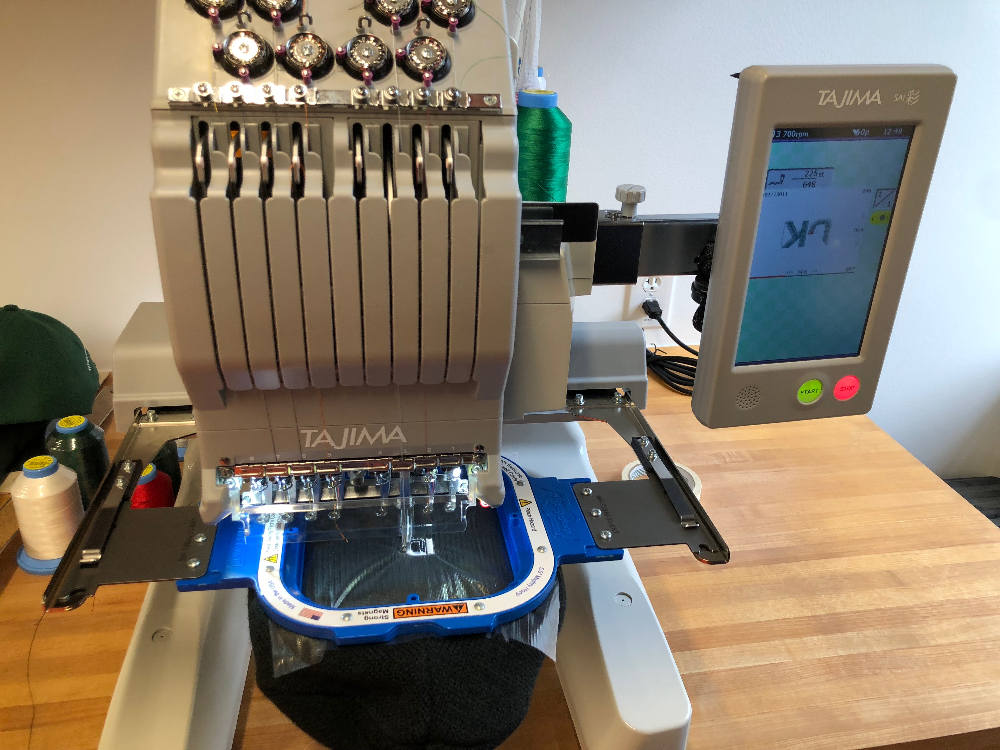
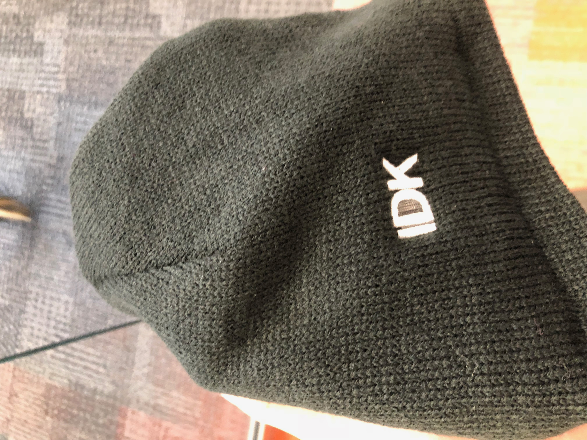
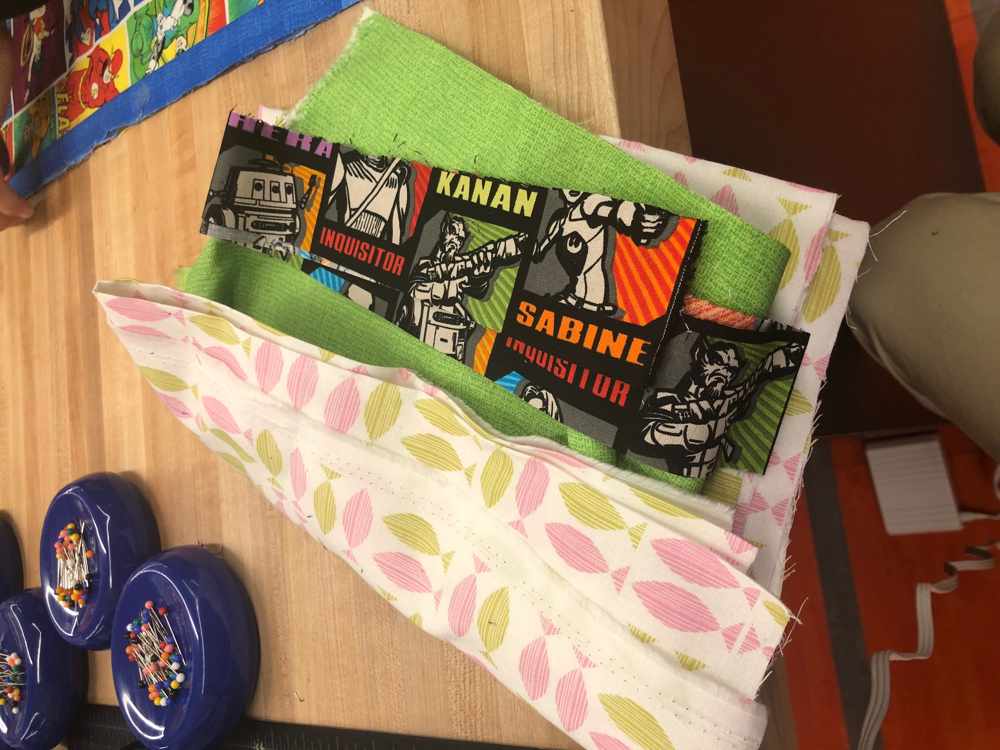
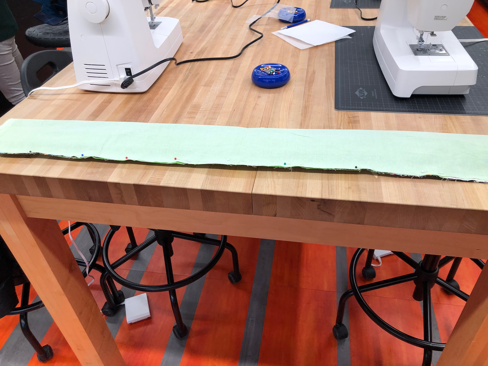
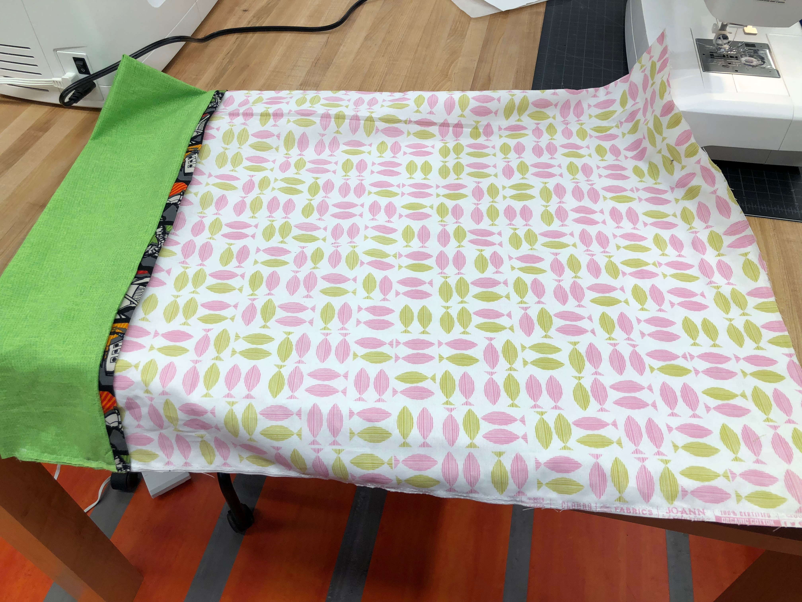

|  |  |  |  |  |  |
|---|---|---|---|---|---|
| This week we work on sewing. The first project is sewing on a hat. Stack paper and hat like in the picture. The two blue squares are strong magnets so it may hurt hand. | Then slide this into the machine and enter the words wanted to print on the hat. Make sure the size and font fit and adjust where the words should be. | Finished product. Tear off the semi-transparent paper and cut of the white paper on the other side. | The next project is sewing a pillow case. First, choose three fabrics. Cut the main one into 20 inches wide, the secondary one into 10 inches wide, and the last one into 5 inches wide. |